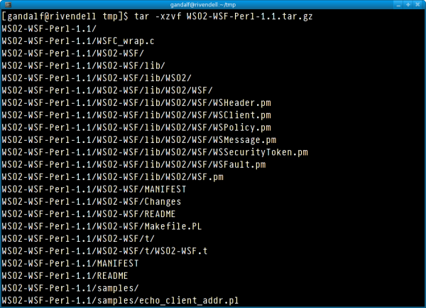
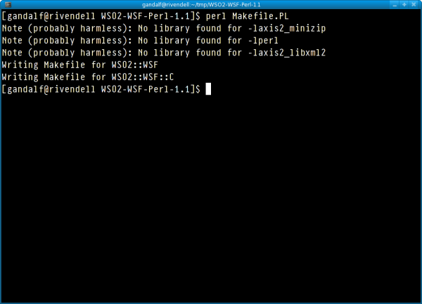
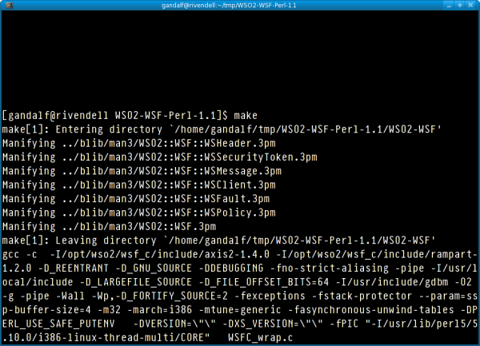
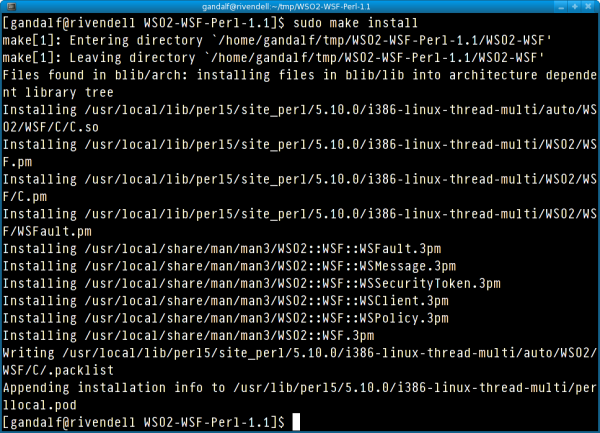

This document guides you on how to install the WSO2 Web Services Framework/Perl extension, and run the server and client samples on Linux.
Please send your feedback to the user mailing list: wsf-perl-user@wso2.org. Kindly see Home page for subscription.
WSF/Perl depends on the Error.pm module for providing errors and exceptions. You have to install that before proceeding with the WSF/Perl installation. You can install Error.pm from CPAN as follows,
# perl -MCPAN -e 'install Error'
You can download WSF/Perl 1.1 either from the WSF/Perl home page or by going to WSF/Perl 1.1 release on CPAN.
The easiest method to install WSF/Perl is from CPAN. Just do,
# perl -MCPAN -e 'install WSO2::WSF'
Another method of getting WSF/Perl installed is to compile it manually.
Unzip WSO2-WSF-Perl-1.1.tar.gz to a temporary
directory.
Then create the make file by typing tar -xzvf
WSO2-WSF-Perl-1.1.tar.gz

After that go to the new directory and create the makefile by typing perl
Makefile.PL. You can safely ignore the "No library found"
warnings.

Compile the code by typing make

Install the extension with make install
